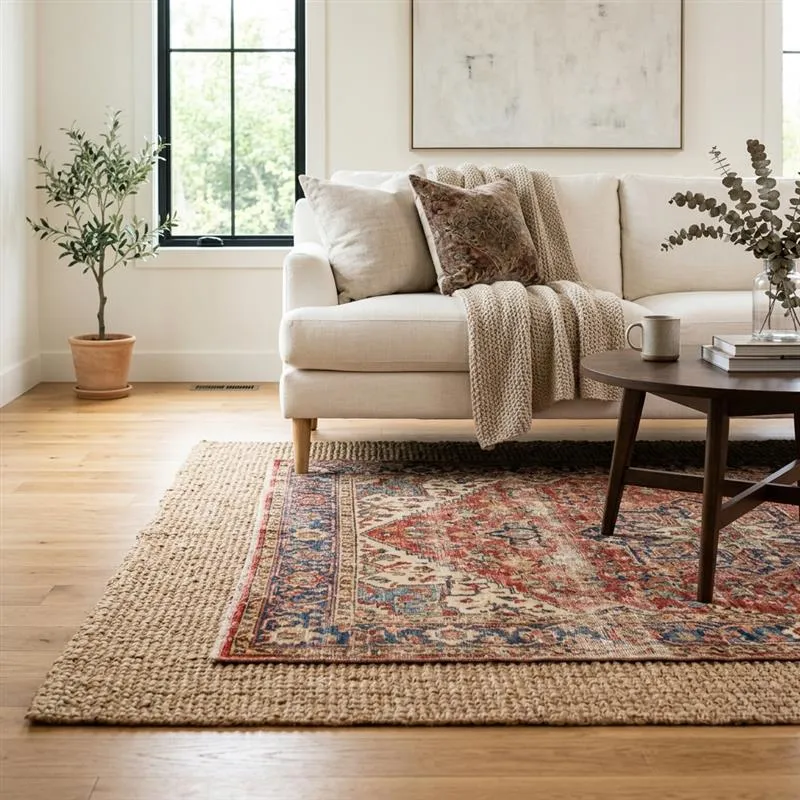
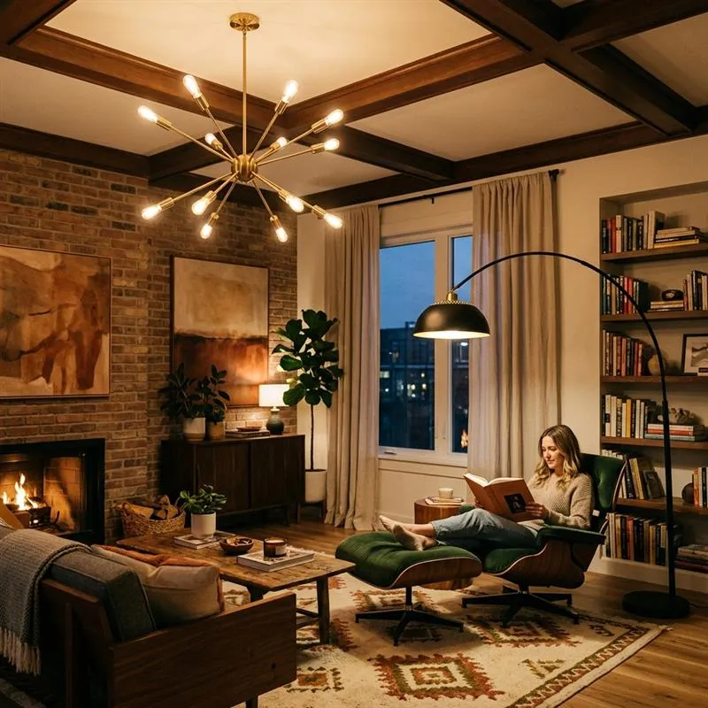
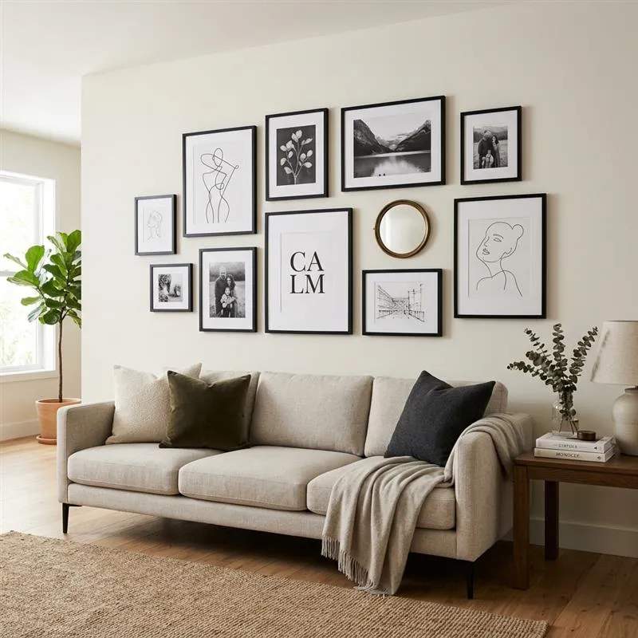
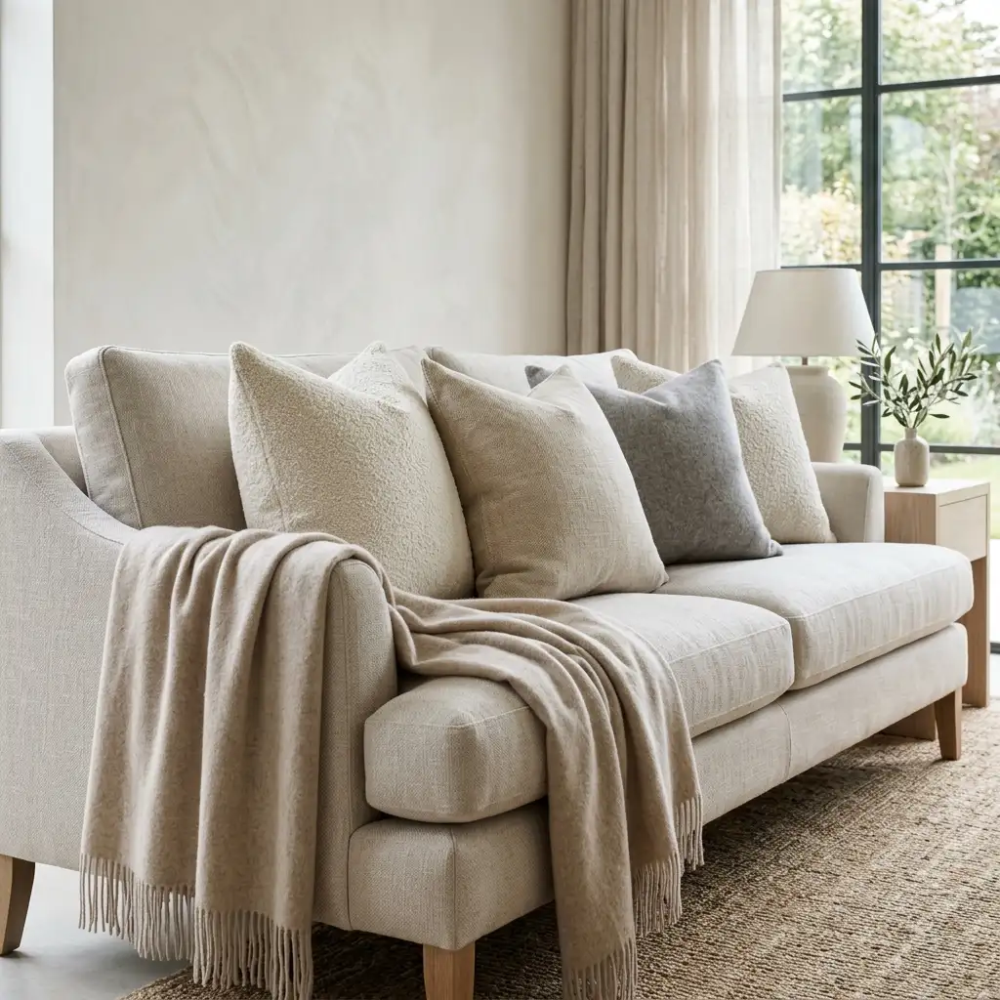
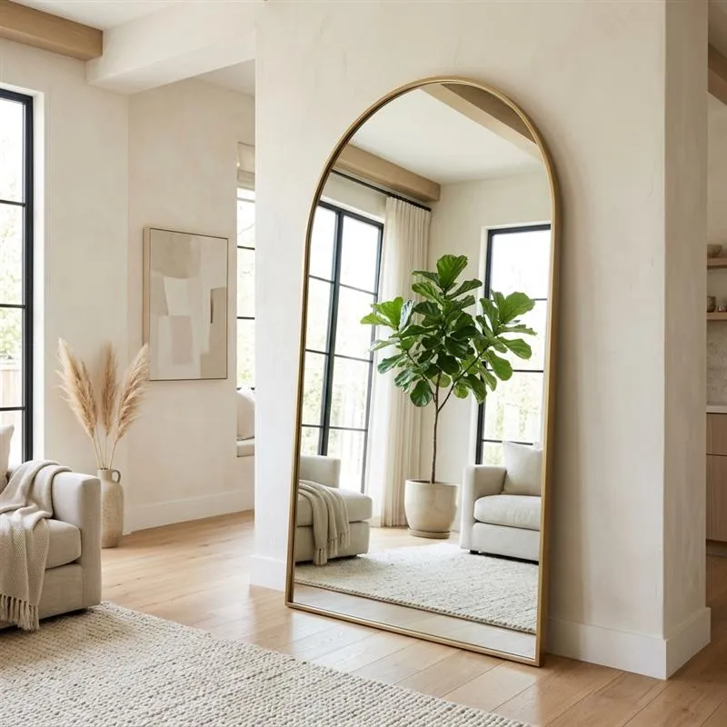
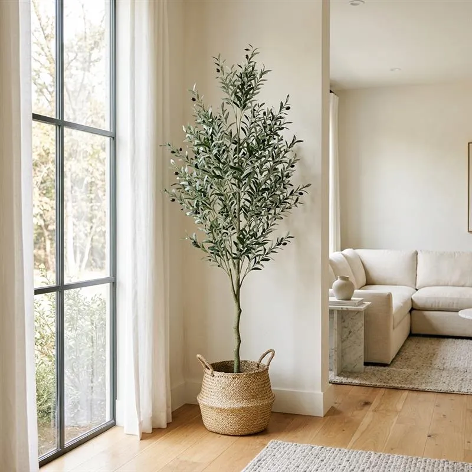
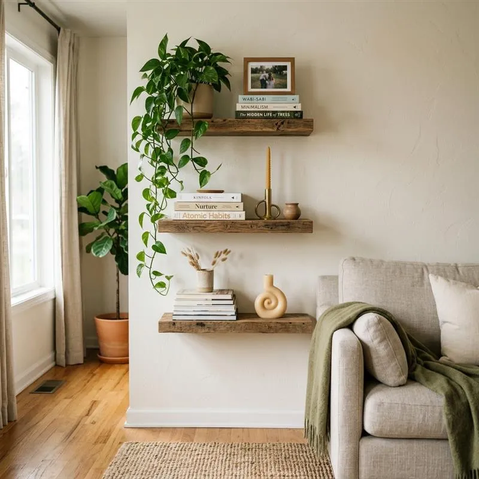
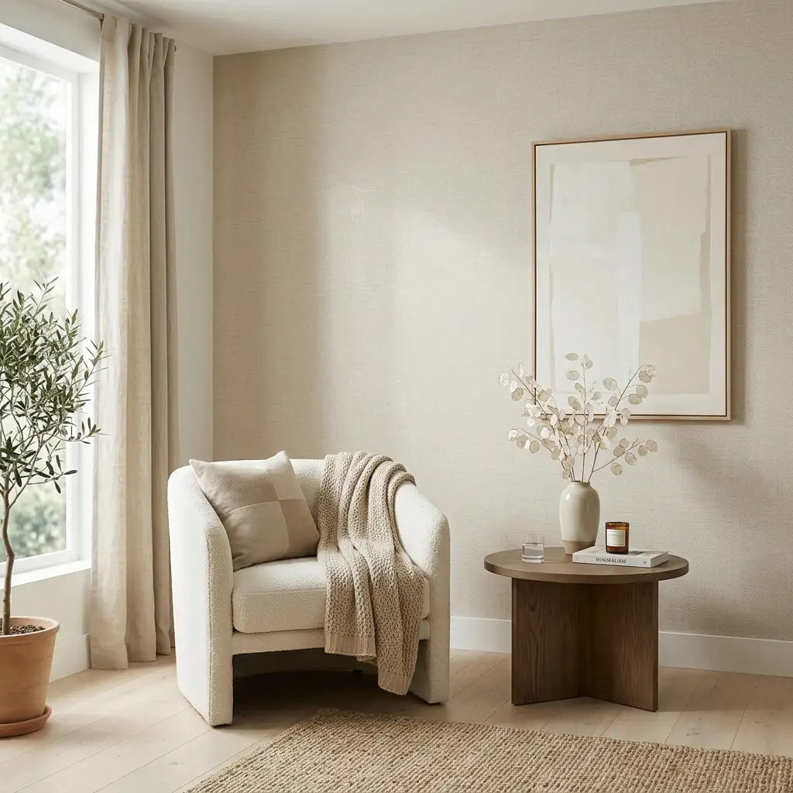
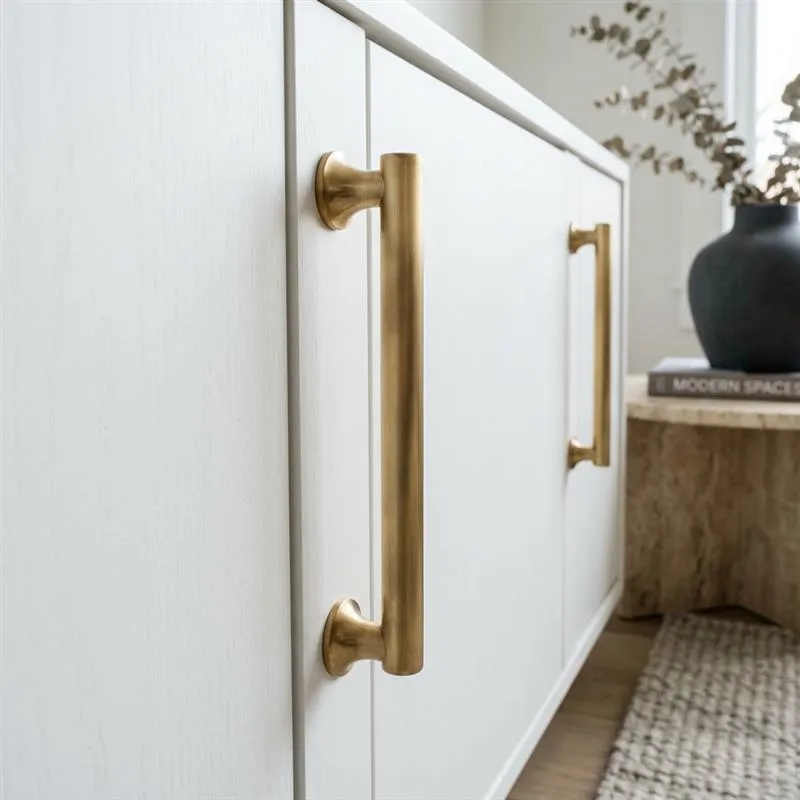
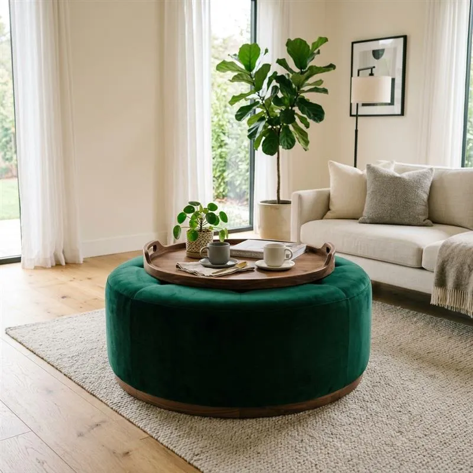

10 Smart Living Room Decor Ideas That Instantly Upgrade Your Space
Picture this: You come home after a long, exhausting day. You walk into your living room, hoping to crash into a sanctuary of relaxation. But instead of feeling peaceful, you look around and feel... underwhelmed. The walls feel bare, the space lacks personality, and the whole room just feels a bit tired.
Sound familiar? You are definitely not alone.
Many of us want a gorgeous, Pinterest-worthy home but mistakenly believe it requires a massive renovation budget or hiring a professional interior designer. The truth? A complete budget living room makeover is entirely possible with a few strategic tweaks. You don't need to knock down walls to create a beautiful space.
Whether you are looking for small living room ideas to maximize your square footage, or you just want to add some cozy living room decor for the upcoming season, you are in the right place.
In this guide, we are going to walk through 10 highly effective, budget-friendly living room decor ideas that will instantly breathe new life into your space. Let’s dive in!

Master the Art of Layered Rugs
Let’s start from the ground up. If you have boring wall-to-wall carpeting or scratched hardwood floors, one of the easiest ways to ground your room is by layering rugs. It adds instant texture, warmth, and a high-end designer feel.
REAL-LIFE USE CASE
Imagine you are renting an apartment with standard, dull beige carpeting. By placing a large, affordable jute rug over the carpet, and then topping it with a smaller, colorful vintage-style rug right under your coffee table, you completely distract from the boring floor beneath.
Styling Tips:
- Keep the base neutral: Use a sisal or jute rug as your large bottom layer.
- Play with patterns: Let the top rug be your pop of color or intricate pattern.
- Size matters: Make sure the front legs of your sofa and chairs rest comfortably on the rugs.

🛒 Amazon Affiliate Picks:
Base Rug: Jute Area Rug
Top Rug: Washable Vintage Area Rug 5x7
Upgrade to Statement Lighting
Nothing kills the vibe of a modern living room design quite like harsh, builder-grade overhead lighting. Swapping out a basic ceiling flush-mount for a stunning chandelier or adding structural floor lamps can change the entire mood of the room.
REAL-LIFE USE CASE
You have a living room that gets very little natural light. Instead of relying on a single, glaring overhead bulb, you install a modern sputnik chandelier and place a sleek arc floor lamp hovering over your reading chair. Suddenly, the room feels intentional and warmly lit.
Styling Tips:
- Layer your lighting: Aim for three sources: overhead, task (reading lamps), and accent (small table lamps).
- Warm bulbs only: Stick to LED bulbs between 2700K and 3000K for a warm, inviting glow.

🛒 Amazon Affiliate Picks:
Ceiling Fixture: Mid Century Modern Sputnik Chandelier
Floor Lamp: Arc Floor Lamp over Couch
Internal Linking Suggestion: Link modern living room design to a blog post about interior design trends.
Create a Meaningful Gallery Wall
Blank walls can make a room feel unfinished. Creating a gallery wall is one of the most personalized living room decor ideas out there. It’s a fantastic way to display your favorite memories, affordable art prints, and unique living room accessories without spending a fortune.
REAL-LIFE USE CASE
You have a massive, empty wall behind your sofa that makes the room feel cold. By gathering affordable frames and filling them with family photos, travel souvenirs, and a few downloadable Etsy art prints, you turn a blank void into an eye-catching focal point.
Styling Tips:
- Plan it out: Trace your frames onto newspaper, cut them out, and tape them to the wall with painter's tape to perfect the layout before hammering any nails.
- Mix and match: Don't just use photos. Throw in a small mirror, a woven wall basket, or typography art for variety.

Internal Linking Suggestion: Check out our guide on modern minimalist aesthetics for more inspiration.
🛒 Amazon Affiliate Picks:
Frame Set: Gallery Wall Frame Set of 10
Wall Decor: Boho Woven Wall Baskets Set
Swap Out Pillows and Throws
If you want a budget living room makeover that takes less than five minutes, look no further than your textiles. Swapping out your throw pillows and blankets is the easiest way to inject new colors and textures into your space, especially as the seasons change.
REAL-LIFE USE CASE
Your living room looks a bit flat and monochromatic. Instead of buying a brand-new couch, you buy a few richly colored velvet pillow covers and drape a chunky knit blanket over the armrest. The room instantly feels like a luxurious boutique hotel lounge.
Styling Tips:
- The Karate Chop: Use down or down-alternative pillow inserts that are slightly larger than the covers so you can give them that classic, plush "designer chop" in the middle.
- Mix textures: Pair smooth leather or cotton with rich velvet, faux fur, or chunky knits to create deep cozy living room decor.

🛒 Amazon Affiliate Picks:
Pillow Covers: Velvet Throw Pillow Covers 18x18
Throw Blanket: Chunky Knit Blanket Throw Boho
Use Mirrors to Fake Square Footage
If you are hunting for small living room ideas, this is the oldest (and best) trick in the designer playbook. Mirrors reflect light and scenery, tricking the eye into thinking the room is much larger and brighter than it actually is.
REAL-LIFE USE CASE
Your living room is narrow and only has one small window. By placing a large arched floor mirror directly across from that window, you bounce the natural light around the room, instantly doubling the visual space and brightness.
Styling Tips:
- Strategic placement: Always be mindful of what the mirror is reflecting. Make sure it's reflecting light or a beautiful piece of art, not a cluttered corner.
- Go oversized: A large leaning floor mirror makes a much grander statement than a tiny wall mirror.

🛒 Amazon Affiliate Picks:
Floor Mirror: Oversized Arched Floor Mirror Full Length
Wall Mirror: Round Gold Wall Mirror 24 inch
Bring Life Indoors with Greenery
Nothing breathes life into a stagnant space quite like plants. Whether you have a green thumb or prefer high-quality faux botanicals, adding greenery is an essential part of modern living room design. Plants add organic shapes, vibrant color, and literally freshen the air.
REAL-LIFE USE CASE
There’s an awkward, empty corner next to your TV stand that drives you crazy. You place a tall, elegant faux olive tree in a woven belly basket in that corner. It instantly fills the vertical space and adds a fresh, vibrant pop of color to the room.
Styling Tips:
- Vary the heights: Mix tall floor plants (like a Fiddle Leaf Fig) with trailing plants (like Pothos) on shelves.
- Elevate your pots: Don't leave plants in their plastic nursery pots. Put them in ceramic planters, brass pots, or woven baskets.

🛒 Amazon Affiliate Picks:
Faux Tree: Tall Faux Olive Tree Artificial Indoor
Planters: Ceramic Planter with Wood Stand
Install Floating Shelves for Display
Bulky bookcases can consume a lot of floor space. If you want to display your favorite living room accessories without cluttering the room, floating shelves are the perfect solution. They draw the eye upward, making the ceiling feel higher.
REAL-LIFE USE CASE
You have a small living room with zero floor space for a bookshelf, but you have a collection of favorite books and small travel souvenirs. By installing three tiered rustic wood floating shelves beside your sofa, you create a beautiful, customized display area that takes up zero floor space.
Styling Tips:
- The Rule of Three: When grouping objects on shelves, arrange them in odd numbers (groups of three or five) as it is naturally more pleasing to the human eye.
- Mix items: Don’t just line up books. Stack some horizontally, add a trailing plant, lean a small framed photo, and place a sculptural candle.

🛒 Amazon Affiliate Picks:
Shelving: Rustic Wood Floating Shelves Set of 3
Decor Accessories: Modern Ceramic Knot Decor
Add Drama with Peel-and-Stick Wallpaper
Want a massive impact for very little money? An accent wall is the way to go. If you are renting or just afraid of long-term commitment, peel-and-stick wallpaper is a total game-changer for a budget living room makeover.
REAL-LIFE USE CASE
Your living room lacks an architectural focal point (like a fireplace). You apply a deep navy, subtly textured peel-and-stick wallpaper to the wall behind your TV. Suddenly, the room has depth, drama, and a stunning custom feel—and you can peel it right off when you move!
Styling Tips:
- Choose the right wall: Typically, the wall your sofa rests against or the wall behind your TV makes the best accent wall.
- Consider scale: If you have a small room, opt for a subtle texture (like faux grasscloth) or a larger, open pattern rather than a busy, tiny print that can feel chaotic.

🛒 Amazon Affiliate Picks:
Wallpaper: Geometric Peel and Stick Wallpaper Modern
Tools: Wallpaper Smoothing Tool Kit
Elevate Furniture with Updated Hardware
Sometimes, the best living room decor ideas involve working with what you already own. If your media console, side tables, or cabinets are looking a bit dated, you don’t need to throw them out. A simple hardware swap works magic.
REAL-LIFE USE CASE
You have an inexpensive, generic white IKEA TV stand that looks like it belongs in a dorm room. You unscrew the cheap plastic knobs and replace them with heavy, brushed brass finger pulls. That $20 update makes the entire piece look like a $500 designer console.
Styling Tips:
- Measure first: Always measure the distance between the drill holes (the "center-to-center" measurement) on your existing furniture before buying new pulls.
- Mix metals carefully: It’s okay to mix metals in a room (e.g., black lamp stands with brass cabinet pulls), but try to limit it to two distinct metal finishes to keep it cohesive.

🛒 Amazon Affiliate Picks:
Cabinet Pulls: Brushed Brass Cabinet Pulls Handles
Knobs: Matte Black Round Cabinet Knobs
Invest in Multifunctional Furniture
For those searching for small living room ideas, clutter is the ultimate enemy. The secret to a peaceful, stylish room is making sure everything has a hidden home. Enter: multifunctional furniture.
REAL-LIFE USE CASE
Your living room always looks messy because of stray remote controls, video game controllers, and extra blankets. You swap your standard coffee table for a chic storage ottoman. Now, you can kick your feet up, place a serving tray on top for drinks, and hide all your clutter inside.
Styling Tips:
- Nesting tables: If you don't have space for a large coffee table, use nesting tables that can be tucked away when not in use.
- Use trays: If you buy an upholstered storage ottoman, purchase a beautiful wooden or metallic tray to sit on top so you have a hard, flat surface for coffee cups and decor.

🛒 Amazon Affiliate Picks:
Storage Ottoman: Round Velvet Storage Ottoman with Lid
Styling Tray: Large Round Wooden Tray for Ottoman
Conclusion
Creating a space you love doesn't require a celebrity budget or a degree in interior design. By implementing these 10 smart living room decor ideas—from layering cozy rugs to simply upgrading your cabinet hardware—you can transform your room into a stylish, welcoming retreat.
Remember, decorating is a marathon, not a sprint. You don't have to tackle all of these ideas in one weekend. Start with the easiest swaps, like adding a new throw pillow or a faux plant, and watch how quickly the vibe of your room shifts.
Explore these ideas and upgrade your space today! Your dream living room is closer (and much more affordable) than you think.
Frequently Asked Questions (People Also Ask)
How can I decorate my living room on a low budget?
The best way to decorate on a budget is to focus on high-impact, low-cost updates. Things like painting an accent wall, swapping out throw pillow covers (instead of buying whole new pillows), hanging affordable gallery wall art, and upgrading lighting fixtures can completely change a room for under $100.
How do I make a small living room look bigger?
To make a small living room feel larger, utilize natural light and mirrors. Place a large mirror opposite your window to bounce light around. Additionally, choose furniture with exposed legs (rather than sitting directly on the floor) to create a sense of airflow, and use multifunctional furniture to hide clutter.
What are the must-have living room accessories?
Every living room should have a mix of textures and personal items to feel complete. Must-have accessories include cozy throw blankets, decorative pillows, a rug to anchor the space, indoor plants (real or faux) for a touch of life, and personal artwork or photos to make the space uniquely yours.
What colors make a living room look more expensive?
Neutral palettes generally lend a high-end, sophisticated feel to a room. Think warm whites, creamy beiges, soft greys, and earthy tones like olive green or terracotta. Using a tonal color scheme (different shades of the same color) creates a luxurious, custom-designed aesthetic.